UNIDAD 2
El trabajo de oficina constituye una parte fundamental del funcionamiento de cualquier organización. En ella se genera, recibe, procesa, organiza, almacena y comunica información necesaria para realizar las actividades administrativas y apoyar la toma de decisiones.
En esta unidad estudiaremos los principales elementos que intervienen en el trabajo de oficina: desde las actividades que realiza el personal hasta el manejo de documentos, informes, archivos, equipos y espacios de trabajo.
El análisis de estos elementos permite identificar cómo se realiza el trabajo, qué recursos se utilizan y qué aspectos pueden mejorarse para lograr mayor orden, productividad y eficiencia.
Podemos presentar la idea central al estudiante de forma muy sencilla:
PERSONAS + INFORMACIÓN + ACTIVIDADES + EQUIPO + ESPACIO → TRABAJO DE OFICINA EFICIENTE
Objetivo de la Unidad 2
Analizar los elementos que integran el trabajo de oficina, considerando el manejo de la información, los documentos, los archivos, los equipos, el espacio, el personal y las actividades administrativas, con la finalidad de identificar oportunidades que contribuyan a mejorar la organización, eficiencia y productividad del trabajo.
TEMARIO
Temario de la Unidad 2
2. ANÁLISIS DEL TRABAJO DE OFICINA
2.1 El trabajo de oficina
2.2 Recopilación de la información
2.3 Formas
2.4 Informe o reportes
2.5 Archivos
2.6 Equipo de oficina
2.7 Espacio de oficina
2.8 Personal
2.9 Actividades
2.1 El trabajo de oficina
2.1 El trabajo de oficina
Aunque muchas de estas actividades no participan directamente en la fabricación de un producto o en la prestación final de un servicio, son indispensables porque apoyan, coordinan y controlan las operaciones de la organización.
Por ejemplo, cuando una empresa realiza una compra, detrás de ella pueden existir diferentes actividades de oficina:
SOLICITUD → COTIZACIÓN → AUTORIZACIÓN → COMPRA → REGISTRO → ARCHIVO
Cada una genera información y requiere coordinación entre personas y áreas.
¿Cuál es la finalidad del trabajo de oficina?
Su finalidad principal es facilitar el funcionamiento de la organización mediante el manejo eficiente de la información y de las actividades administrativas.
El trabajo de oficina permite:
- Mantener información organizada y disponible.
- Facilitar la comunicación entre departamentos.
- Registrar las operaciones realizadas.
- Coordinar actividades y responsabilidades.
- Dar seguimiento a trámites y procesos.
- Apoyar la toma de decisiones.
- Conservar documentos y evidencias.
- Facilitar el control administrativo.
Idea sencilla para el estudiante
La oficina no solamente produce documentos; produce información que permite organizar y tomar decisiones.
Principales actividades del trabajo de oficina
Dentro de una organización podemos encontrar actividades como:
Recibir información
Correos, solicitudes, llamadas, documentos o instrucciones.
Registrar información
Capturar datos en formatos, sistemas o bases de datos.
Procesar información
Clasificar, calcular, revisar, comparar o transformar datos.
Comunicar información
Enviar correos, elaborar informes, emitir avisos o compartir instrucciones.
Organizar documentos
Clasificar expedientes y mantener información disponible.
Coordinar actividades
Programar reuniones, actividades, entregas y responsabilidades.
Controlar y dar seguimiento
Verificar que las actividades se realicen correctamente y dentro de los tiempos establecidos.
Flujo del trabajo de oficina
El trabajo de oficina puede comprenderse como un flujo:
ENTRADA → PROCESAMIENTO → SALIDA → CONTROL
Entrada
La oficina recibe información.
Ejemplo: llega una solicitud de compra.
Procesamiento
La información se revisa, registra y tramita.
Ejemplo: se verifica la solicitud y se solicitan cotizaciones.
Salida
Se genera un resultado.
Ejemplo: se emite una orden de compra.
Control
Se verifica que el proceso haya sido realizado correctamente.
Ejemplo: se comprueba que la compra haya sido autorizada y registrada.
Este flujo ayuda al estudiante a comprender que la información entra a la oficina, se transforma y produce un resultado útil para la organización.
¿Por qué analizar el trabajo de oficina?
Analizarlo permite conocer cómo se realizan realmente las actividades y detectar situaciones que disminuyen la eficiencia.
Por ejemplo:
- Actividades duplicadas.
- Documentos innecesarios.
- Exceso de autorizaciones.
- Información que se captura varias veces.
- Tiempos de espera.
- Mala distribución de funciones.
- Uso inadecuado del equipo.
- Problemas de comunicación.
- Archivos desorganizados.
- Recorridos innecesarios.
El objetivo del análisis no es únicamente detectar errores, sino encontrar formas más sencillas, ordenadas y eficientes de realizar el trabajo.
Ejemplo:
Supongamos que un empleado solicita material de oficina.
Situación actual
Empleado llena solicitud → Secretaria captura información → Jefe firma → Administración revisa → Gerente autoriza → Compras recibe → Compras vuelve a capturar los datos.
Al analizar el procedimiento encontramos:
Duplicidad: la misma información se captura dos veces.
Tiempo: existen varias esperas para obtener firmas.
Proceso: incluso las compras pequeñas requieren autorización de Gerencia.
Pregunta de análisis
¿Todos estos pasos agregan valor o algunos podrían simplificarse?
Precisamente esta es la función del análisis del trabajo de oficina: observar cómo se trabaja para identificar oportunidades de mejora.
Idea clave
Una oficina eficiente no es la que realiza más trámites, sino la que logra los resultados necesarios utilizando adecuadamente la información, el tiempo y los recursos.
2.2 Recopilación de la información
2.2 Recopilación de la información
¿Qué es la recopilación de información?
La recopilación de información es el proceso de obtener, reunir, organizar y verificar datos relacionados con las actividades, procedimientos, documentos, personal y recursos de una oficina.
Su finalidad es conocer cómo se realiza realmente el trabajo, no solamente cómo debería realizarse.
Por ejemplo, un procedimiento puede indicar que una solicitud debe resolverse en 24 horas, pero al recopilar información podemos descubrir que en la práctica tarda tres días.
LO ESTABLECIDO ≠ LO QUE SIEMPRE OCURRE EN LA PRÁCTICA
Por eso necesitamos obtener evidencia antes de proponer mejoras.
¿Para qué recopilamos información?
La información permite:
Conocer cómo funciona actualmente la oficina.
Identificar problemas, retrasos y duplicidades.
Comparar lo establecido con lo que realmente se realiza.
Detectar actividades innecesarias.
Conocer las necesidades del personal.
Medir tiempos, cargas de trabajo y resultados.
Fundamentar las decisiones y propuestas de mejora.
Idea clave
No podemos mejorar un proceso que primero no conocemos y comprendemos.
¿Qué información debemos recopilar?
Al analizar el trabajo de oficina podemos investigar diferentes aspectos.
Actividades
¿Qué tareas se realizan y con qué frecuencia?
Procedimientos
¿Qué pasos se siguen para realizar cada actividad?
Personal
¿Quién realiza cada actividad y qué responsabilidades tiene?
Tiempo
¿Cuánto tarda cada actividad o procedimiento?
Documentos
¿Qué formatos, solicitudes, informes y registros se utilizan?
Equipo y tecnología
¿Qué herramientas y sistemas se utilizan?
Espacio
¿Cómo están distribuidos los puestos, archivos y equipos?
Problemas
¿Dónde aparecen errores, retrasos, duplicidades o dificultades?
Podemos resumirlo visualmente:
¿QUÉ SE HACE? → ¿QUIÉN LO HACE? → ¿CÓMO? → ¿CON QUÉ? → ¿CUÁNTO TARDA? → ¿QUÉ PROBLEMAS EXISTEN?
Fuentes de información
No toda la información procede del mismo lugar. Para obtener una visión completa debemos utilizar diferentes fuentes.
Fuentes humanas
Personas que conocen o participan directamente en el trabajo.
Ejemplos: empleados, supervisores, responsables de área, clientes internos o directivos.
Fuentes documentales
Documentos existentes en la organización.
Ejemplos: manuales, procedimientos, organigramas, formatos, expedientes, reportes, políticas y registros.
Fuentes directas
Información obtenida al observar cómo se desarrolla realmente el trabajo.
Ejemplo: observar cuánto tarda un trabajador en registrar y tramitar una solicitud.
Fuentes digitales
Información almacenada en sistemas y herramientas tecnológicas.
Ejemplos: bases de datos, sistemas administrativos, correos, registros electrónicos y reportes generados por software.
Técnicas para recopilar información
Aquí es importante que el estudiante diferencie la fuente de información de la técnica utilizada para obtenerla.
Observación
Consiste en observar directamente cómo se realiza el trabajo.
Permite conocer:
- Secuencia de actividades.
- Tiempos.
- Movimientos.
- Interrupciones.
- Uso de equipos.
- Situaciones que quizá el trabajador no menciona.
Ejemplo: observar el recorrido de una solicitud desde que llega hasta que es autorizada.
Entrevista
Consiste en conversar directamente con las personas involucradas mediante preguntas previamente preparadas.
Permite conocer:
- Experiencias.
- Problemas.
- Opiniones.
- Responsabilidades.
- Necesidades.
- Explicaciones sobre determinados procedimientos.
Ejemplo: preguntar al responsable de Compras por qué algunas solicitudes presentan retrasos.
Cuestionario
Es un conjunto estructurado de preguntas aplicado a varias personas.
Es especialmente útil cuando necesitamos recopilar información de un grupo amplio de trabajadores de manera uniforme.
Ejemplo: aplicar un cuestionario al personal administrativo sobre los principales problemas del sistema utilizado.
Revisión documental
Consiste en examinar documentos y registros existentes.
Podemos revisar:
Manuales – formatos – reportes – expedientes – políticas – estadísticas – registros – organigramas.
Permite comprobar si lo que ocurre en la práctica coincide con lo establecido formalmente.
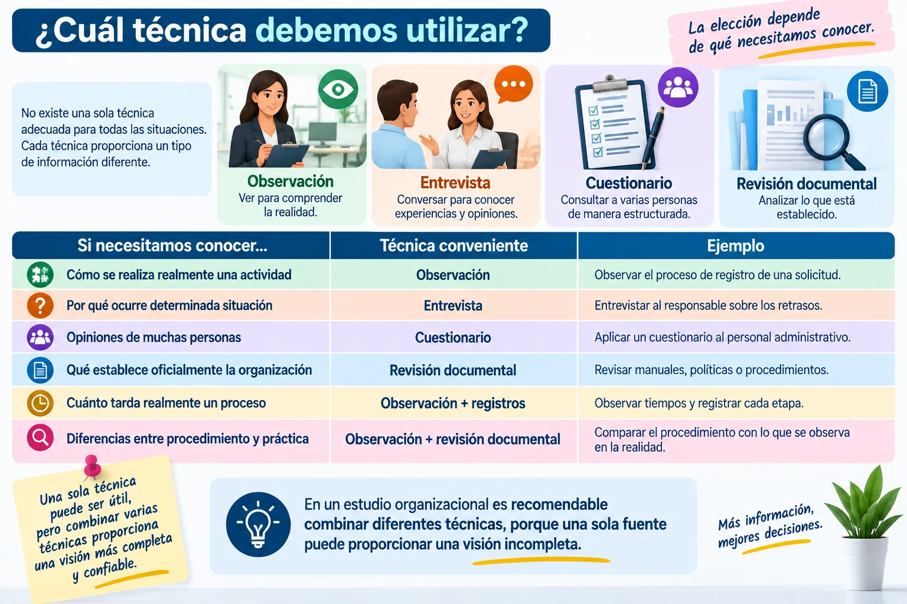
Verificar la información
Recopilar información no significa aceptar automáticamente todo lo obtenido.
Debemos comprobar que sea:
Pertinente — relacionada con el problema estudiado.
Confiable — proveniente de fuentes que puedan sustentarse.
Suficiente — permita comprender adecuadamente la situación.
Actual — corresponda a las condiciones presentes.
Objetiva — basada en hechos y no únicamente en opiniones.
Ejemplo aplicado
Supongamos que el responsable de un área afirma:
“Las solicitudes se autorizan el mismo día.”
Pero durante el estudio encontramos:
Entrevista: el responsable señala que tardan un día.
Observación: algunas solicitudes permanecen esperando autorización.
Registros: el promedio real es de tres días.
¿Qué información debemos considerar?
No se trata necesariamente de descartar la entrevista. Debemos comparar las diferentes evidencias para comprender por qué existe esa diferencia.
Quizá algunas solicitudes sí se resuelven inmediatamente, mientras que otras presentan retrasos.
Esto se conoce como contrastar la información.
De los datos a la evidencia
La recopilación debe seguir una lógica:
OBTENER → REGISTRAR → ORGANIZAR → VERIFICAR → COMPARAR → UTILIZAR
El objetivo final no es acumular documentos o datos, sino convertirlos en información útil para analizar el trabajo de oficina.
Idea clave
Una buena decisión administrativa comienza con información suficiente, confiable y verificable.
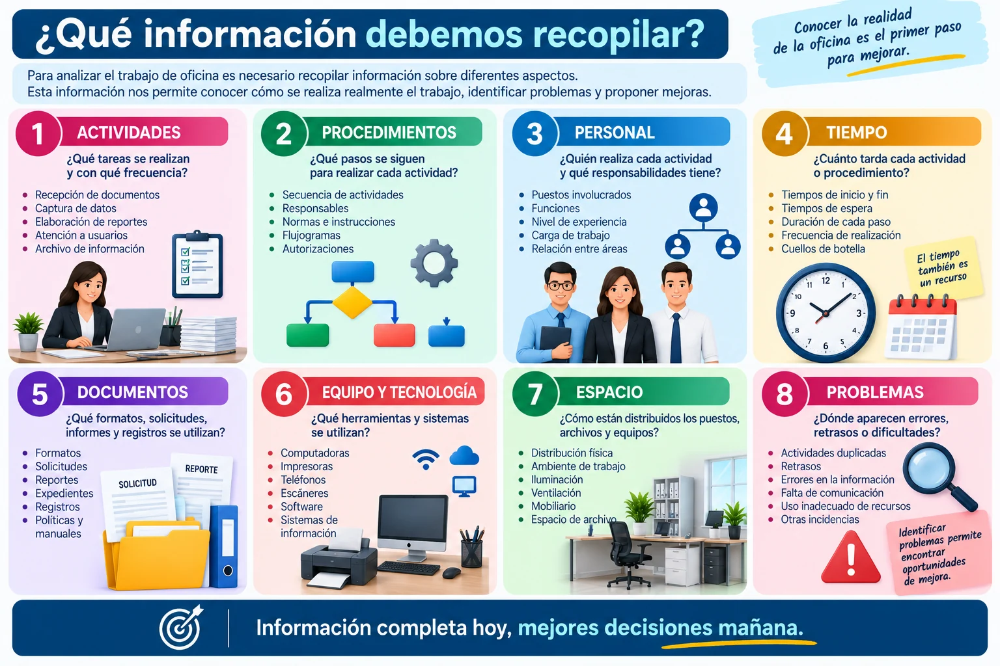
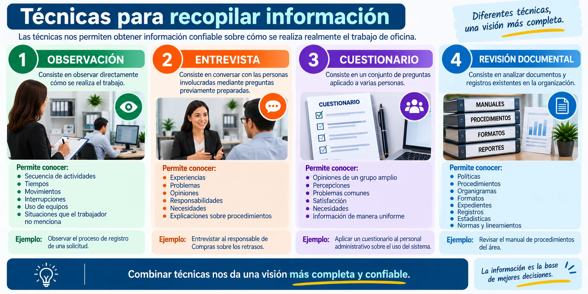
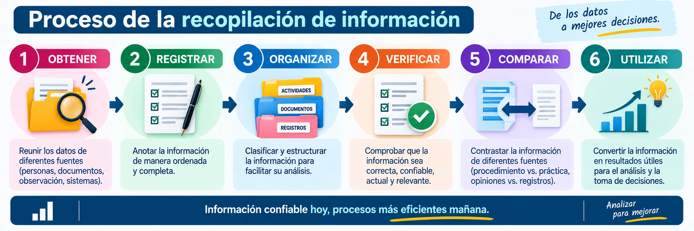
2.3 Formas
2.3 Formas
¿Qué son las formas?
Las formas administrativas son documentos estructurados que contienen espacios previamente definidos para registrar, recopilar, transmitir o conservar información relacionada con las actividades de una organización.
Pueden presentarse en formato impreso o digital.
Algunos ejemplos son:
Solicitud de compra – Orden de trabajo – Requisición – Factura – Recibo – Registro de asistencia – Solicitud de vacaciones – Formato de inventario
Su propósito es que la información se registre de manera uniforme, clara y ordenada.
Una forma bien diseñada facilita el trabajo; una forma mal diseñada puede generar errores, duplicidades y pérdida de tiempo.
¿Para qué sirven las formas?
Las formas cumplen diferentes funciones dentro de una oficina:
Recopilar información
Permiten obtener datos necesarios de manera estructurada.
Registrar operaciones
Dejan evidencia de actividades, movimientos o decisiones.
Comunicar información
Facilitan que los datos pasen de una persona o departamento a otro.
Autorizar
Permiten documentar aprobaciones y responsabilidades.
Dar seguimiento
Ayudan a conocer el estado de una solicitud, trámite o actividad.
Controlar
Facilitan la verificación de operaciones y procedimientos.
Conservar evidencia
Generan registros que pueden consultarse posteriormente.
Podemos representarlo:
RECOPILAR → REGISTRAR → COMUNICAR → AUTORIZAR → CONTROLAR → CONSERVAR
Elementos de una forma
Para que una forma sea útil debe contener únicamente la información necesaria y presentarla de manera lógica.
Identificación
Permite reconocer el documento.
Ejemplo: nombre de la empresa, nombre del formato, código o número de folio.
Datos generales
Información necesaria para identificar la operación.
Ejemplo: fecha, departamento, nombre del solicitante.
Contenido
Datos específicos relacionados con el trámite o actividad.
Instrucciones
Indicaciones necesarias para completar correctamente el formato.
Autorizaciones
Espacios para nombres, firmas o aprobaciones.
Control
Elementos para facilitar su seguimiento.
Ejemplo: número de folio, fecha de recepción o estado del trámite.
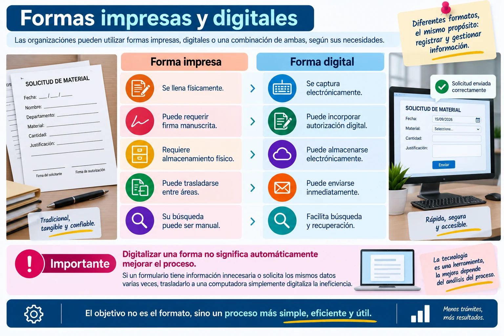
¿Cómo analizar una forma?
En un estudio organizacional no debemos aceptar un formato solamente porque “siempre se ha utilizado”.
Debemos preguntarnos:
¿Es realmente necesario?
¿Para qué se utiliza?
¿Quién lo llena?
¿Quién utiliza la información?
¿Todos los datos solicitados son necesarios?
¿Existe información duplicada?
¿Es fácil de comprender y completar?
¿Podría simplificarse?
¿Puede integrarse con otro formato?
¿Conviene digitalizarlo?
Características de una buena forma
Una forma eficiente debe ser:
Clara
Las instrucciones y campos deben comprenderse fácilmente.
Sencilla
Debe solicitar únicamente la información necesaria.
Ordenada
Los datos deben aparecer siguiendo una secuencia lógica.
Precisa
Cada campo debe indicar claramente qué información se requiere.
Funcional
Debe facilitar la actividad para la cual fue creada.
Identificable
Debe incluir nombre, código, fecha o elementos necesarios para su control.
Accesible
Debe ser fácil de llenar, consultar y recuperar.
Problemas frecuentes en las formas
Al analizar los formatos de una oficina podemos encontrar:
- Datos solicitados más de una vez.
- Campos que nunca se utilizan.
- Instrucciones poco claras.
- Exceso de firmas o autorizaciones.
- Información que ya existe en otro sistema.
- Formatos demasiado extensos.
- Diferentes formatos para la misma actividad.
- Versiones desactualizadas.
- Captura manual repetitiva.
- Documentos que se generan pero nadie consulta.
Estos problemas provocan más trabajo sin necesariamente generar más valor.
Ejemplo
Supongamos que una empresa utiliza una solicitud de material.
Forma actual
El trabajador debe registrar:
Nombre → número de empleado → departamento → puesto → jefe inmediato → fecha → material → cantidad → justificación → tres firmas.
Al analizarla descubrimos que el sistema ya contiene automáticamente:
Nombre + número de empleado + departamento + puesto + jefe inmediato.
Entonces podemos preguntarnos:
¿Por qué solicitar nuevamente información que la organización ya posee?
Forma mejorada
El sistema identifica automáticamente al trabajador y únicamente solicita:
MATERIAL → CANTIDAD → JUSTIFICACIÓN
Posteriormente dirige la solicitud al responsable correspondiente.
El objetivo no es solamente crear un formato más atractivo, sino reducir actividades innecesarias y facilitar el flujo de información.
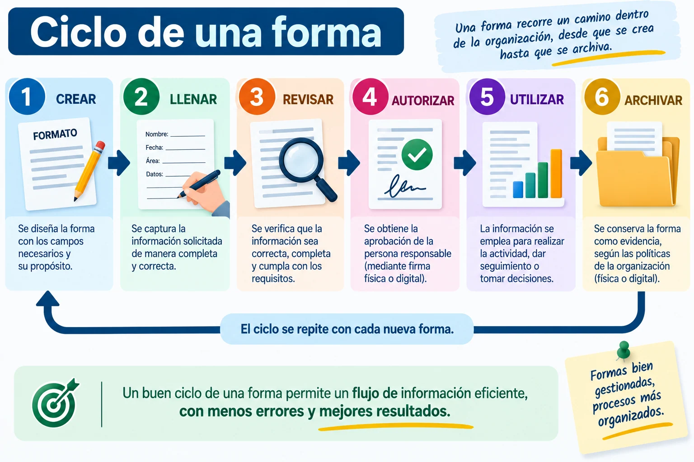
Una forma debe facilitar el flujo de información, no convertirse en un obstáculo administrativo.
Test
Elija la respuesta correcta
2.4 Informes y reportes
2.4 Informes o reportes
¿Qué es un informe o reporte?
Un informe o reporte es un documento que presenta información organizada sobre una situación, actividad, proceso o resultado con la finalidad de informar, analizar, dar seguimiento o apoyar la toma de decisiones.
En una organización, los reportes permiten transformar datos dispersos en información que pueda ser comprendida y utilizada.
Podemos explicarlo así:
DATOS → ORGANIZACIÓN → ANÁLISIS → INFORME → DECISIÓN
Por ejemplo, registrar diariamente las ventas genera muchos datos. Un reporte mensual de ventas los organiza y permite conocer cuánto se vendió, qué productos tuvieron mayor demanda y si se alcanzaron las metas.
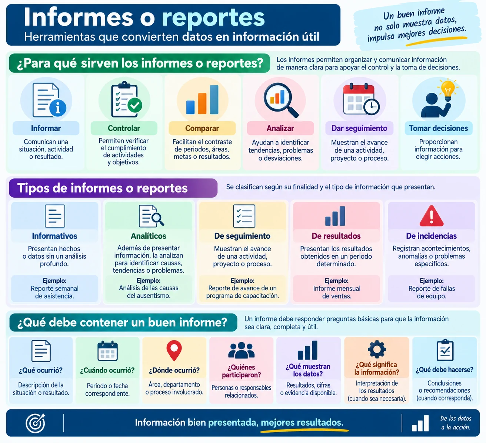
Características de un buen informe
Un informe debe ser:
Claro — Fácil de comprender.
Preciso — Presentar información específica y sin ambigüedades.
Objetivo — Basarse en hechos y evidencia.
Confiable — Utilizar información correcta y verificable.
Relevante — Incluir únicamente información útil para su propósito.
Oportuno — Entregarse cuando todavía pueda utilizarse para tomar decisiones.
Ordenado — Presentar la información siguiendo una estructura lógica.
Datos no es lo mismo que información
Esta diferencia es especialmente importante para el alumno.
Supongamos que tenemos estos datos:
12 – 15 – 18 – 21 – 27
Por sí solos dicen muy poco.
Ahora agregamos contexto:
Quejas recibidas durante los últimos cinco meses: 12 → 15 → 18 → 21 → 27
Ya podemos observar que existe un incremento progresivo de las quejas.
El informe convierte datos en información útil al proporcionar orden, contexto y significado.
Ejemplo:
Supongamos que Administración necesita conocer el desempeño del proceso de compras durante septiembre.
Un reporte podría mostrar:
Solicitudes recibidas: 120
Solicitudes atendidas: 112
Pendientes: 8
Tiempo promedio: 2.5 días
Solicitudes con retraso: 18
Pero el análisis puede agregar:
Hallazgo: la mayoría de los retrasos se concentra en solicitudes que requieren autorización adicional.
Entonces el reporte ya no solamente dice qué ocurrió, sino que proporciona información para investigar por qué ocurrió y qué podría mejorarse.
Errores frecuentes en los reportes
Durante el análisis del trabajo de oficina también debemos revisar si los reportes realmente son útiles. Algunos problemas frecuentes son:
- Exceso de información.
- Datos repetidos.
- Información desactualizada.
- Reportes demasiado extensos.
- Falta de indicadores.
- Datos sin contexto.
- Gráficas difíciles de interpretar.
- Elaboración de reportes que nadie utiliza.
- Duplicidad de reportes entre departamentos.
- Entrega fuera de tiempo.
- Una pregunta muy útil para analizar cualquier reporte es:
¿Quién utiliza esta información y qué decisión puede tomar con ella?
Si no podemos responderla, debemos revisar si el reporte realmente es necesario.
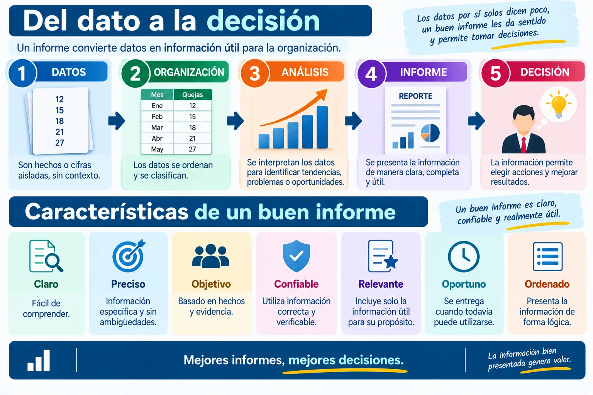
La finalidad de un informe administrativo no es simplemente mostrar datos, sino convertirlos en información útil para la organización.
2.5 Archivos
2.5 Archivos
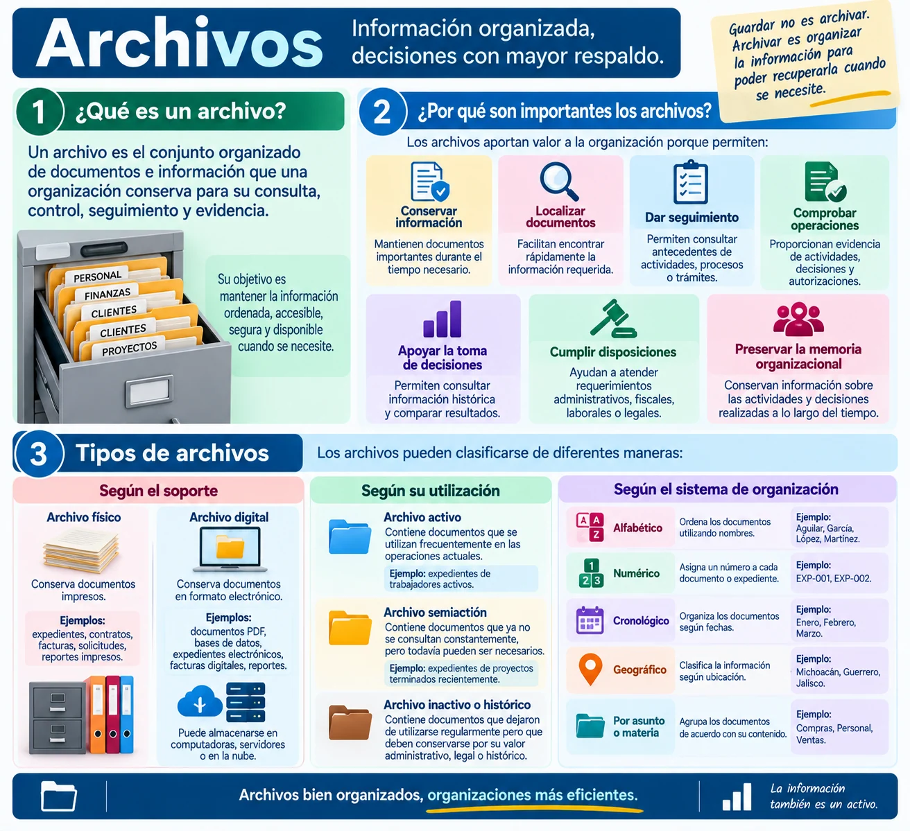
Según su utilización
Archivo activo
Contiene documentos que se utilizan frecuentemente en las operaciones actuales.
Ejemplo: expedientes de trabajadores activos.
Archivo semiactivo
Contiene documentos que ya no se consultan constantemente, pero todavía pueden ser necesarios.
Ejemplo: expedientes de proyectos terminados recientemente.
Archivo inactivo o histórico
Contiene documentos que dejaron de utilizarse regularmente pero que deben conservarse por su valor administrativo, legal o histórico.
Sistemas para organizar archivos
Una organización debe seleccionar el sistema que facilite mejor la recuperación de su información.
Alfabético
Ordena los documentos utilizando nombres.
Ejemplo:**
Aguilar → García → López → Martínez → Nevarez**
Es frecuente en expedientes de personas, clientes o proveedores.
Numérico
Asigna un número a cada documento o expediente.
Ejemplo:
EXP-001 → EXP-002 → EXP-003
Cronológico
Organiza los documentos según fechas.
Ejemplo:
Enero → Febrero → Marzo → Abril
Geográfico
Clasifica la información según ubicación.
Ejemplo:
Michoacán → Guerrero → Jalisco
Por asunto o materia
Agrupa los documentos de acuerdo con su contenido.
Ejemplo:
COMPRAS → PERSONAL → VENTAS → CONTABILIDAD
El sistema adecuado dependerá de cómo necesita localizarse posteriormente la información.
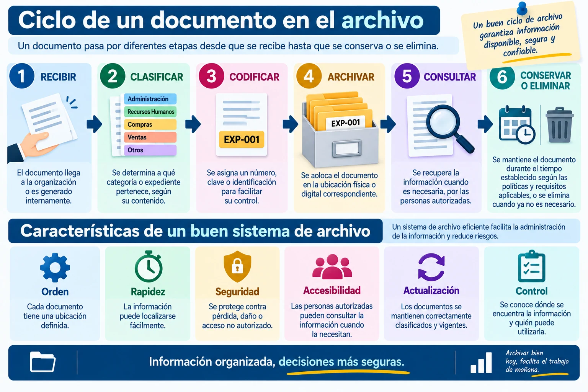
Seguridad y confidencialidad
No toda la información de una organización debe estar disponible para todas las personas.
Los archivos pueden contener:
Datos personales – información financiera – contratos – expedientes laborales – información de clientes – información estratégica.
Por ello deben establecerse controles como:
ACCESO AUTORIZADO → PROTECCIÓN → RESPALDO → CONTROL DE CONSULTA
En los archivos digitales también es importante realizar copias de seguridad para reducir el riesgo de pérdida de información.
Ejemplo:
Supongamos que Recursos Humanos necesita localizar el expediente de un trabajador.
Archivo desorganizado
Carpetas sin identificación → documentos mezclados → versiones duplicadas → búsqueda manual prolongada.
Resultado: pérdida de tiempo y riesgo de utilizar información incorrecta.
Archivo organizado
APELLIDO → NOMBRE → NÚMERO DE EMPLEADO → DOCUMENTOS CLASIFICADOS
El expediente puede contener:
Contrato → identificación → documentación laboral → capacitación → evaluaciones → incidencias
Resultado: información localizada rápidamente y disponible para las personas autorizadas.
El verdadero valor de un archivo no está en cuánto almacena, sino en qué tan fácilmente permite conservar, proteger y recuperar la información necesaria.
2.6 Equipos de oficina
2.6 Equipo de oficina
¿Qué es el equipo de oficina?
El equipo de oficina comprende las herramientas, dispositivos, mobiliario y recursos tecnológicos que facilitan la realización de las actividades administrativas.
Su función no es solamente hacer el trabajo más rápido. Un equipo adecuado debe contribuir a:
FACILITAR EL TRABAJO → REDUCIR TIEMPOS → DISMINUIR ERRORES → MEJORAR LA COMUNICACIÓN → AUMENTAR LA PRODUCTIVIDAD
Por ejemplo, una computadora puede agilizar la elaboración de reportes; un escáner facilita la digitalización de documentos; y un sistema de videoconferencia permite coordinar actividades sin necesidad de desplazamientos.
La tecnología es útil cuando responde a una necesidad real del trabajo.
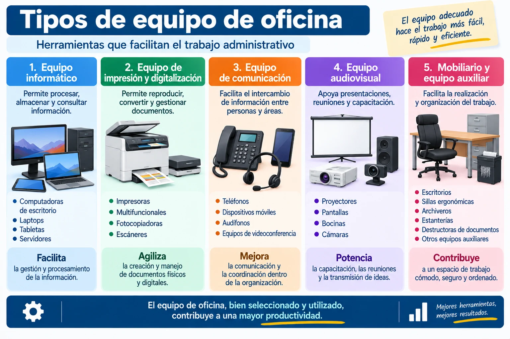
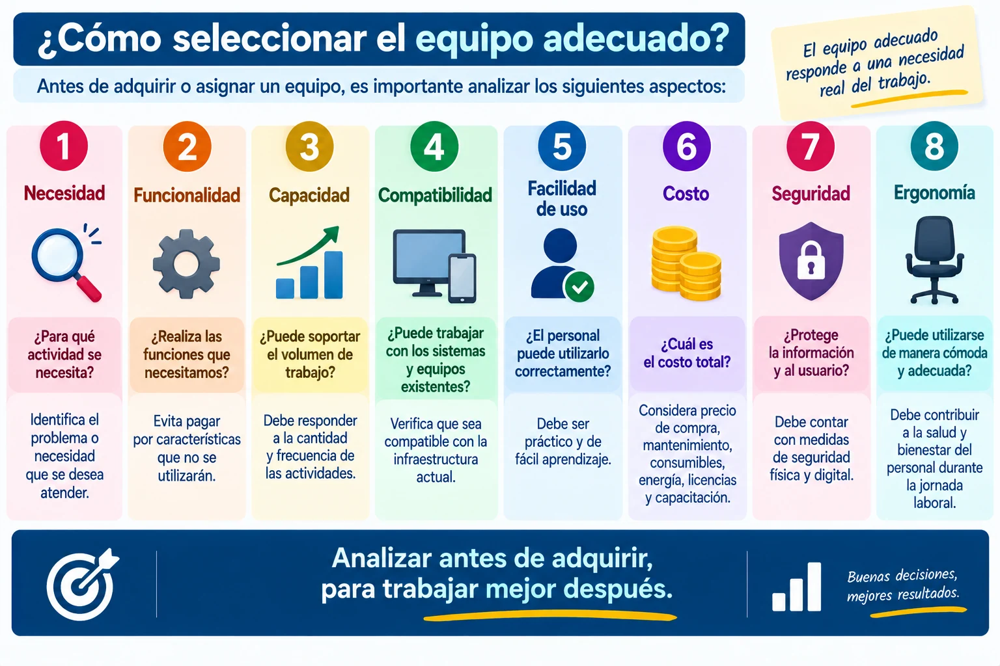
Equipo adecuado vs. equipo inadecuado
Un equipo puede existir en la oficina y aun así no ser adecuado para el trabajo que se realiza.
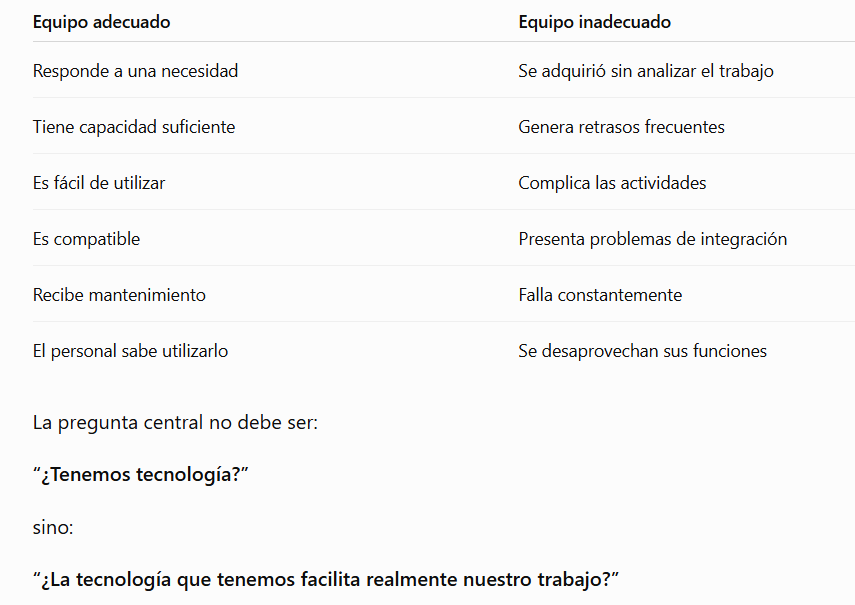
Uso eficiente del equipo
Una vez adquirido, el equipo también debe administrarse correctamente.
Esto implica:
CAPACITAR → UTILIZAR → CUIDAR → MANTENER → ACTUALIZAR → EVALUAR
Capacitar
El personal debe conocer las funciones necesarias para utilizar correctamente el equipo.
Utilizar
Debe emplearse para las actividades para las cuales fue destinado.
Cuidar
Es necesario establecer prácticas que reduzcan daños y uso incorrecto.
Mantener
El mantenimiento preventivo ayuda a evitar fallas e interrupciones.
Actualizar
Algunos equipos y sistemas requieren actualizaciones para continuar funcionando correctamente.
Evaluar
Debe revisarse periódicamente si el equipo continúa respondiendo a las necesidades de la organización.
.webp "mantenimiento")
¿Cómo analizar el equipo de oficina?
Durante un estudio organizacional podemos preguntarnos:
¿Qué equipos se utilizan?
¿Para qué actividades se utilizan?
¿Son realmente necesarios?
¿Su capacidad es suficiente?
¿Se aprovechan todas sus funciones?
¿El personal sabe utilizarlos?
¿Existen equipos duplicados o subutilizados?
¿Provocan retrasos o interrupciones?
¿Reciben mantenimiento?
¿Necesitan actualizarse o sustituirse?
¿Su ubicación facilita el trabajo?
Ejemplo:
Supongamos que cinco trabajadores necesitan utilizar una sola impresora ubicada en otro departamento.
Durante el análisis encontramos:
Problema: los empleados se desplazan constantemente.
Consecuencia: pérdida de tiempo e interrupciones.
Pero la solución no necesariamente es comprar cinco impresoras.
Primero debemos analizar:
Volumen de impresión + frecuencia de uso + ubicación + costo + posibilidad de digitalización
Tal vez la mejor solución sea reubicar una impresora multifuncional en un punto estratégico o reducir la cantidad de documentos que realmente necesitan imprimirse.
Este ejemplo permite enseñar algo fundamental:
Analizar el equipo no significa buscar más recursos, sino utilizar mejor los recursos necesarios.
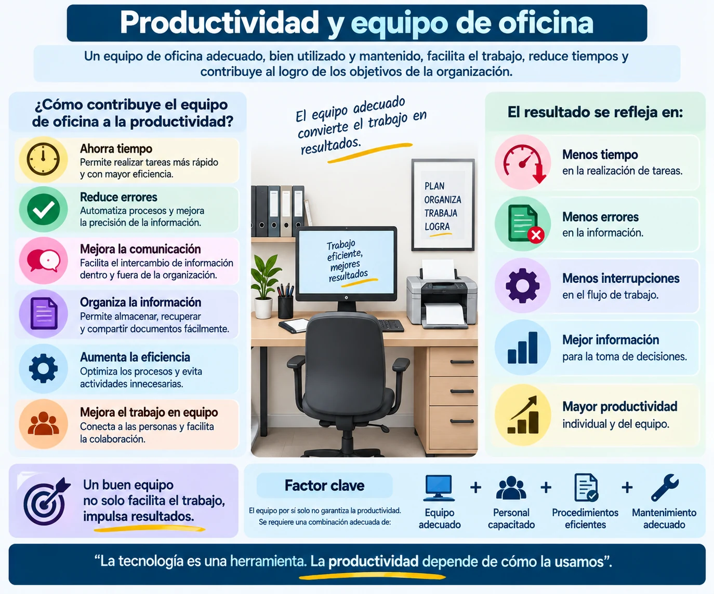
El mejor equipo no es necesariamente el más moderno, sino el que responde adecuadamente a las necesidades del trabajo.
2.7 Espacios de oficina
2.7 Espacio de oficina
¿Qué es el espacio de oficina?
El espacio de oficina es el entorno físico en el que se distribuyen las personas, el mobiliario, los equipos, los documentos y las áreas necesarias para realizar las actividades administrativas.
Una buena distribución busca que el trabajo pueda realizarse de manera:
CÓMODA → SEGURA → ORDENADA → FLUIDA → EFICIENTE
Por ello, analizar el espacio no consiste solamente en determinar si una oficina es grande o pequeña, sino en estudiar cómo se utiliza el espacio disponible.
Una buena distribución del espacio facilita el trabajo; una mala distribución genera movimientos, interrupciones y tiempos innecesarios.
¿Por qué es importante el espacio de oficina?
La distribución del espacio puede influir directamente en:
Productividad
Una distribución adecuada reduce desplazamientos y facilita las actividades.
Comunicación
Las áreas que trabajan constantemente juntas pueden ubicarse de manera que facilite su coordinación.
Concentración
El ruido, las interrupciones y el tránsito excesivo pueden afectar el desempeño.
Seguridad
Los accesos, pasillos y áreas de trabajo deben permitir una circulación segura.
Ergonomía
El mobiliario y los equipos deben ubicarse considerando la comodidad y las características del trabajo.
Aprovechamiento del espacio
Debe evitarse tanto la saturación como la existencia de áreas desaprovechadas.
Atención al usuario
Cuando existe atención al público, la distribución debe facilitar el acceso y la orientación de las personas.

Distribución del espacio y flujo de trabajo
Uno de los aspectos más importantes es analizar si la distribución física corresponde al flujo real de las actividades.
Por ejemplo:
RECEPCIÓN → REGISTRO → REVISIÓN → AUTORIZACIÓN → ARCHIVO
Si estas actividades se realizan continuamente, pero las áreas correspondientes se encuentran muy separadas, pueden producirse:
MÁS RECORRIDOS → MÁS TIEMPO → MÁS INTERRUPCIONES → MENOR EFICIENCIA
Una buena distribución procura que las personas, equipos y documentos que mantienen una relación frecuente estén ubicados de manera lógica.
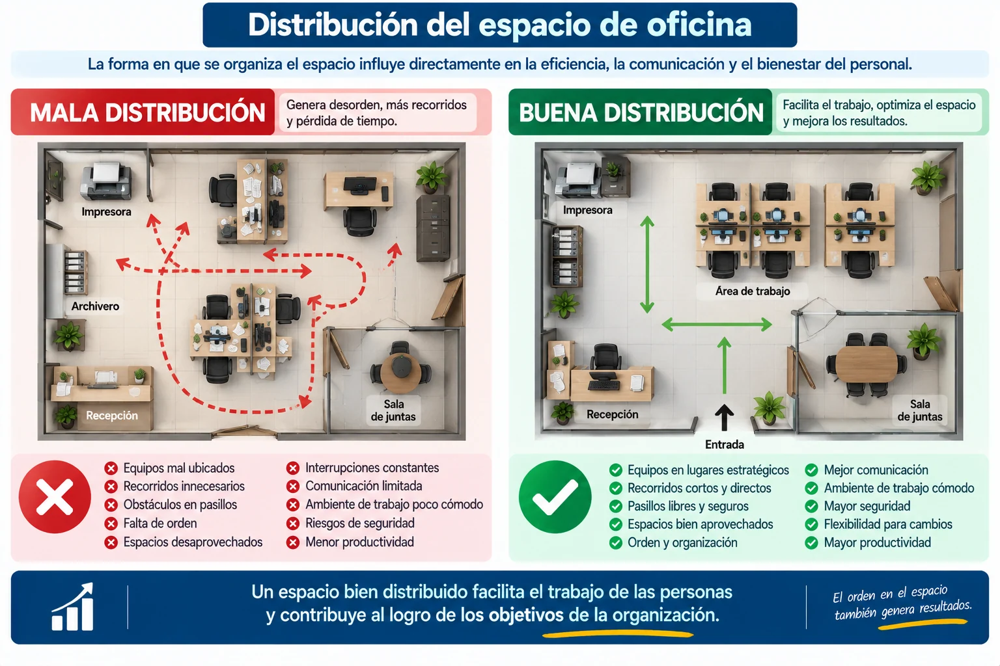
Principios de una buena distribución
Podemos resumirlos en seis principios sencillos.
Proximidad
Las áreas que trabajan conjuntamente deben estar razonablemente cercanas.
Flujo
La distribución debe facilitar la secuencia natural de las actividades.
Aprovechamiento
Debe utilizarse adecuadamente el espacio disponible.
Flexibilidad
El espacio debe permitir ajustes cuando cambien las necesidades de la organización.
Seguridad
La distribución no debe generar obstáculos ni riesgos innecesarios.
Ergonomía
El espacio debe favorecer condiciones adecuadas para realizar el trabajo.
Ergonomía en la oficina
La ergonomía busca adaptar las condiciones de trabajo a las características de las personas.
En una oficina debemos considerar, entre otros aspectos:
SILLA → postura y soporte adecuados
ESCRITORIO → altura y espacio suficientes
MONITOR → posición que facilite una visualización cómoda
TECLADO Y MOUSE → ubicación adecuada para su utilización
ILUMINACIÓN → suficiente y procurando evitar reflejos
ESPACIO → suficiente para realizar movimientos y actividades
La finalidad es favorecer comodidad, seguridad y eficiencia durante la jornada laboral.
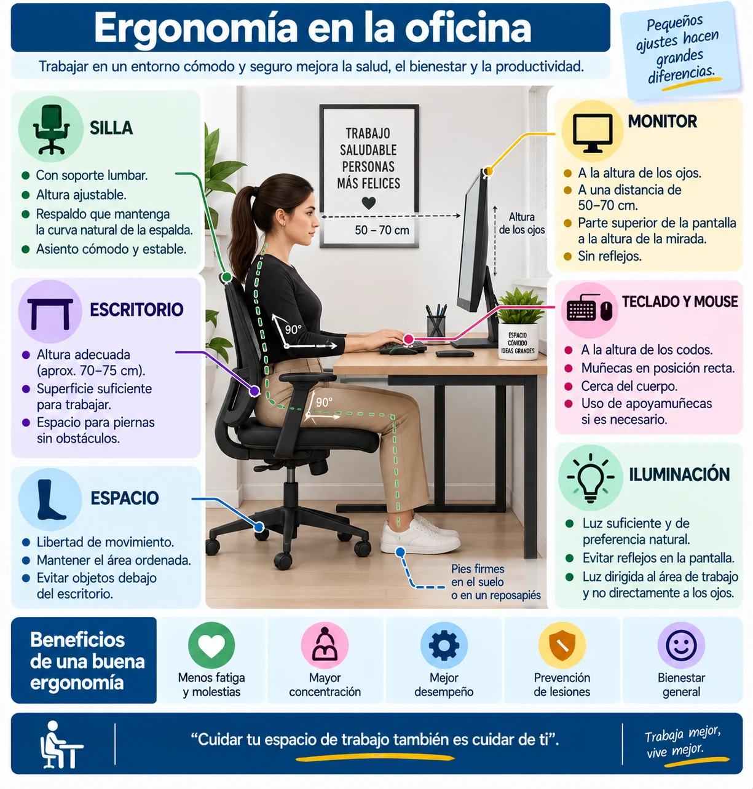
Ejemplo:
Supongamos que en una oficina administrativa la impresora se encuentra en un extremo del área, mientras que los trabajadores que más la utilizan están ubicados en el extremo contrario.
Durante el día realizan numerosos recorridos:
PUESTO DE TRABAJO → IMPRESORA → PUESTO DE TRABAJO
Individualmente cada recorrido puede parecer insignificante, pero al repetirse muchas veces representa tiempo acumulado y constantes interrupciones.
Antes de comprar otra impresora podemos analizar:
¿Quién la utiliza? → ¿Con qué frecuencia? → ¿Dónde debería ubicarse? → ¿Realmente es necesario imprimir?
A veces una reorganización del espacio puede solucionar el problema sin aumentar los recursos.
¿Cómo analizar el espacio de oficina?
Podemos utilizar estas preguntas:
¿El espacio corresponde a las actividades realizadas?
¿Existe suficiente espacio para trabajar y circular?
¿Las áreas relacionadas están adecuadamente ubicadas?
¿Existen recorridos innecesarios?
¿Los equipos están cerca de quienes los utilizan?
¿El mobiliario facilita el trabajo?
¿La iluminación y ventilación son adecuadas?
¿Existen problemas de ruido o interrupciones?
¿La distribución permite realizar cambios futuros?
¿El espacio ofrece condiciones adecuadas de seguridad y ergonomía?
No siempre necesitamos más espacio; en muchas ocasiones necesitamos utilizar mejor el espacio disponible.
2.8 Personal
2.8 Personal
El personal constituye uno de los elementos más importantes del trabajo de oficina. Aunque una organización cuente con instalaciones adecuadas, tecnología y procedimientos establecidos, son las personas quienes realizan las actividades, utilizan los recursos, procesan la información y hacen posible el funcionamiento de los procesos administrativos.
¿Qué entendemos por personal de oficina?
El personal de oficina está integrado por las personas que realizan funciones administrativas y de apoyo necesarias para el funcionamiento de la organización.
Entre sus actividades pueden encontrarse:
Recibir información → Registrar datos → Elaborar documentos → Atender solicitudes → Organizar archivos → Utilizar equipos → Comunicarse con otras áreas → Dar seguimiento a trámites
Por ello, la eficiencia de una oficina no depende únicamente de los recursos materiales o tecnológicos, sino también de que el personal tenga claramente definidas sus funciones y cuente con los conocimientos necesarios para desempeñarlas.
¿Qué debemos analizar del personal?
Al realizar un análisis del trabajo de oficina es importante observar principalmente:
- Funciones: qué actividades realiza cada persona.
- Responsabilidades: de qué tareas o resultados es responsable.
- Carga de trabajo: cantidad de actividades asignadas.
- Conocimientos y habilidades: si cuenta con la preparación necesaria.
- Coordinación: cómo se relaciona y comunica con otras personas o áreas.
- Uso de recursos: cómo utiliza documentos, equipos y herramientas.
- Desempeño: si las actividades se realizan correctamente y en el tiempo requerido.
- Problemas relacionados con el personal
El análisis puede permitir detectar situaciones como:
Duplicidad de funciones – responsabilidades poco claras – sobrecarga de trabajo – distribución desigual de actividades – falta de capacitación – problemas de comunicación – errores frecuentes – falta de coordinación
Estas situaciones pueden provocar retrasos, pérdida de tiempo, errores y disminución de la productividad.
Ejemplo:
En una oficina, tres empleados reciben solicitudes de clientes, pero no existe una distribución clara de responsabilidades.
Como consecuencia:
Dos empleados pueden atender la misma solicitud → otras solicitudes quedan pendientes → se duplica el trabajo → aumentan los tiempos de respuesta.
El problema no necesariamente significa que falte personal. Primero debe analizarse cómo están distribuidas las funciones y responsabilidades.No se trata solamente de saber cuántas personas trabajan en una oficina, sino de analizar qué hacen, cómo lo hacen y cómo se distribuye el trabajo.
2.9 Actividades
2.9 Actividades
Este apartado integra prácticamente todo lo que hemos estudiado. Ya analizamos información, formas, reportes, archivos, equipo, espacio y personal. Ahora corresponde estudiar las actividades que se realizan diariamente en la oficina, cómo se relacionan y si realmente son necesarias.
¿Qué son las actividades de oficina?
Las actividades de oficina son las tareas y acciones que realiza el personal para cumplir con los procesos administrativos y alcanzar los objetivos de la organización.
Algunos ejemplos son:
Recibir documentos – registrar información – elaborar reportes – atender solicitudes – realizar llamadas – enviar correos – capturar datos – revisar documentos – autorizar trámites – archivar información – programar reuniones – dar seguimiento
Una actividad puede parecer pequeña de manera individual, pero cuando se realiza muchas veces puede representar una cantidad importante de tiempo, recursos y esfuerzo.
Analizar las actividades permite descubrir no solamente qué se hace, sino si realmente es necesario hacerlo y si existe una mejor manera de realizarlo.
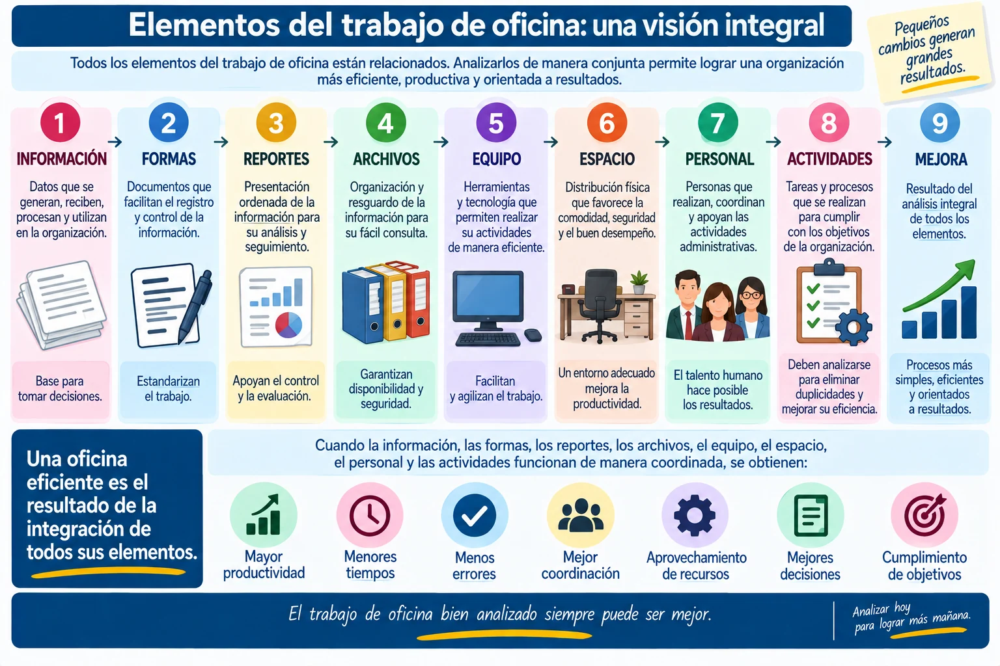
Actividad, tarea y proceso
Es conveniente que el estudiante diferencie estos conceptos.
Tarea
Es una acción específica.
Ejemplo: capturar los datos de una solicitud.
Actividad
Puede estar formada por una o varias tareas relacionadas.
Ejemplo: registrar una solicitud.
Proceso
Integra varias actividades relacionadas para obtener un resultado.
Por ejemplo:
PROCESO: Compra de material
Solicitar → Revisar → Autorizar → Comprar → Recibir → Registrar
Así podemos comprender:
TAREAS → ACTIVIDADES → PROCESO → RESULTADO
¿Por qué debemos analizar las actividades?
El análisis permite identificar situaciones que afectan la eficiencia, como:
Duplicidad
Dos personas realizan la misma actividad sin necesidad.
Demoras
Una actividad permanece detenida esperando información o autorización.
Actividades innecesarias
Se realizan tareas que ya no aportan utilidad al proceso.
Exceso de controles
Una operación requiere demasiadas revisiones o autorizaciones.
Retrabajo
Una actividad debe realizarse nuevamente debido a errores.
Movimientos innecesarios
Las personas deben desplazarse constantemente para completar una actividad.
Falta de secuencia
Las actividades no siguen un orden lógico.
Falta de responsable
No está claramente definido quién debe realizar determinada actividad.

Una herramienta sencilla: 5W + 1H
Podemos utilizar una herramienta muy práctica para analizar actividades:
WHAT – ¿Qué?
¿Qué actividad se realiza?
WHY – ¿Por qué?
¿Por qué es necesaria?
WHO – ¿Quién?
¿Quién la realiza?
WHERE – ¿Dónde?
¿Dónde se realiza?
WHEN – ¿Cuándo?
¿Cuándo se realiza?
HOW – ¿Cómo?
¿Cómo se lleva a cabo?
En el análisis administrativo también podemos agregar:
HOW LONG – ¿Cuánto tarda?
Esto permite estudiar una actividad de manera sistemática.
Actividades que agregan valor
No todas las actividades aportan el mismo beneficio.
Actividades necesarias
Contribuyen directamente al resultado o son indispensables para el funcionamiento y control.
Ejemplo: verificar que una factura corresponda con una compra realizada.
Actividades necesarias pero mejorables
Deben realizarse, pero podrían simplificarse.
Ejemplo: una autorización que actualmente requiere trasladar físicamente un documento y podría gestionarse mediante un sistema.
Actividades innecesarias
No generan un beneficio suficiente y podrían eliminarse.
Ejemplo: capturar nuevamente información que ya existe en el sistema.
Por eso, al analizar cada actividad podemos preguntarnos:
Simplificación del trabajo
El objetivo del análisis no es únicamente encontrar problemas. Debemos buscar formas más eficientes de realizar las actividades.
Podemos aplicar cinco acciones:
Antes de automatizar una actividad debemos preguntarnos si realmente es necesaria. Automatizar una actividad innecesaria no elimina la ineficiencia.
Ejemplo:
Supongamos que para solicitar material se realiza lo siguiente:
1. Empleado llena formato.
2. Secretaria captura los datos.
3. Supervisor revisa.
4. Jefe firma.
5. Administración vuelve a capturar los datos.
6. Gerente autoriza.
7. Compras recibe la solicitud.
Al analizar encontramos:
Duplicidad: los datos se capturan dos veces.
Demora: existen varias esperas para autorización.
Control excesivo: todas las compras requieren autorización del gerente.
Oportunidad de mejora: integrar la captura y establecer niveles de autorización según el tipo o monto de la compra.
El proceso podría convertirse en:
SOLICITUD DIGITAL → REVISIÓN → AUTORIZACIÓN SEGÚN NIVEL → COMPRAS
Aquí el estudiante puede observar que analizar las actividades permite simplificar el proceso completo.
Medición de las actividades
También necesitamos conocer cuánto trabajo representa una actividad.
Podemos observar:
FRECUENCIA × TIEMPO = CARGA DE LA ACTIVIDAD
Por ejemplo:
Una actividad tarda 5 minutos y se realiza 30 veces al día.
5 × 30 = 150 minutos diarios
Es decir, esa actividad consume 2 horas y 30 minutos al día.
Esto demuestra por qué una pequeña mejora en una actividad repetitiva puede generar un impacto importante.
¿Cómo saber si una actividad debe mejorarse?
Podemos preguntarnos:
¿Es necesaria?
¿Aporta valor?
¿Se repite información?
¿Puede realizarse en menos pasos?
¿Existe una espera innecesaria?
¿La realiza la persona adecuada?
¿Puede combinarse con otra actividad?
¿Puede cambiarse su secuencia?
¿La tecnología podría facilitarla?
¿Cuánto tiempo y recursos consume?
Si una actividad consume recursos pero no contribuye al resultado, debemos analizar si puede modificarse o eliminarse.
De la actividad a la mejora
El análisis puede resumirse en esta secuencia:
OBSERVAR → MEDIR → CUESTIONAR → ANALIZAR → SIMPLIFICAR → MEJORAR